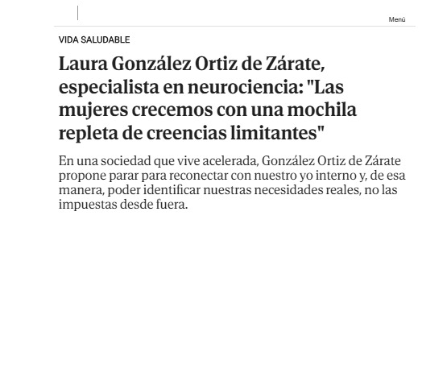
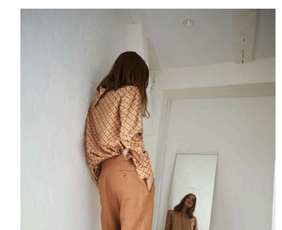
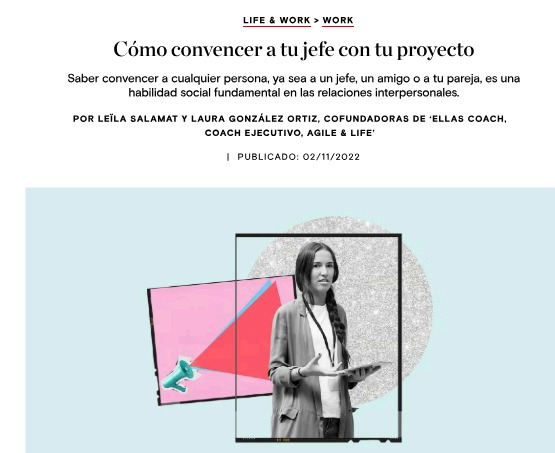
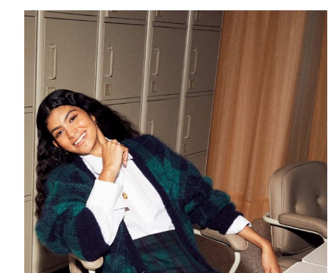
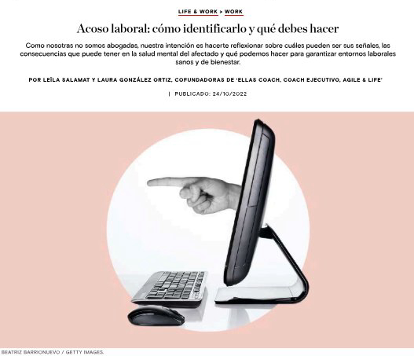
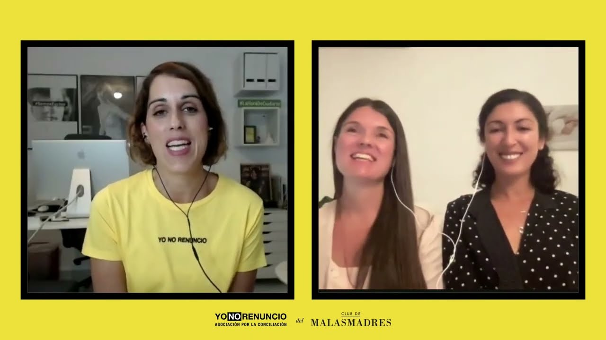
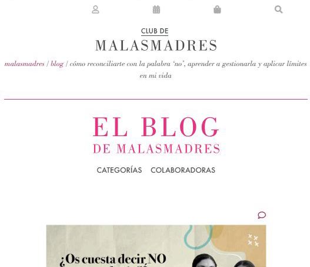
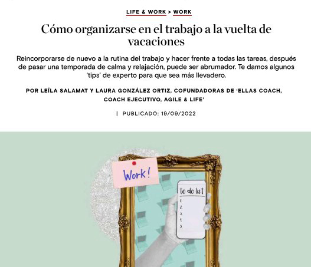
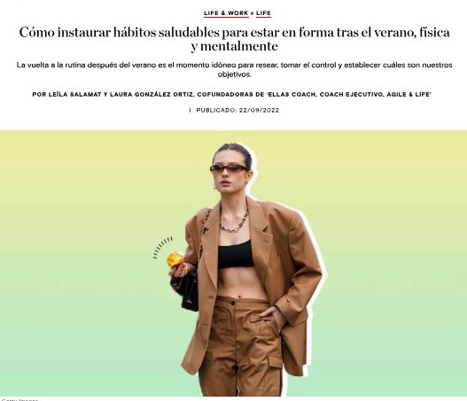

Artículos, entrevistas y colaboraciones en medios especializados sobre liderazgo consciente, productividad y bienestar profesional.

En una sociedad que vive acelerada, Laura González Ortiz de Zárate propone parar para reconectar con el yo interno y así identificar las necesidades reales, no las impuestas desde fuera. Una entrevista sobre creencias limitantes, culpa femenina y transformación personal.

Laura G. Ortiz de Zárate y Leïla Salamat, cofundadoras de ellas Coach, desglosan técnicas prácticas para antes y durante la exposición: desde la preparación y el ensayo hasta el control de la respiración y el lenguaje no verbal.

El arte de la persuasión se asienta en tres pilares: preparación, presencia y escucha activa. Laura González Ortiz y Leïla Salamat explican cómo estructurar un argumentario sólido, dominar el lenguaje no verbal y usar el silencio como herramienta de influencia.

Activar el estado de flow —ese momento de máxima motivación en que el tiempo desaparece— requiere autoconocimiento y gestión de las distracciones. Laura González Ortiz y Leïla Salamat explican cómo lograrlo para mejorar productividad y salud mental.

El mobbing es más frecuente —y más silencioso— de lo que parece. Laura González Ortiz y Leïla Salamat desglosan sus señales de alerta, el impacto en la salud emocional y las claves para construir entornos donde la confianza y la escucha activa sean la norma.

La maternidad representa uno de los mayores vectores de pérdida de talento cualificado en las organizaciones. Laura González Ortiz de Zárate expone un marco metodológico para gestionar esta transición crítica mediante la deconstrucción de creencias limitantes y el mapeo de la gestión de energía.

Decir "no" es un acto de autoconocimiento y autocuidado. Laura González Ortiz y Leïla Salamat proponen la técnica PERA para interrumpir el piloto automático del "sí" y aprender a poner límites desde la autenticidad, sin culpa y con coherencia.

Reincorporarse tras el verano sin abrumarse requiere legitimar la parada y dedicar tiempo a la planificación estratégica. Laura González Ortiz y Leïla Salamat ofrecen herramientas prácticas para retomar el control de la agenda con claridad y foco.

La vuelta es el momento idóneo para soltar lo que ya no aporta e instaurar hábitos alineados con los propios valores. Moverse, alimentarse con consciencia, aprender algo nuevo y reservar espacios de descanso son las propuestas de Laura González Ortiz y Leïla Salamat.